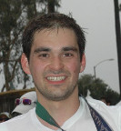

 Timur Alperovich
Email: timur AT timuralp.com
Short biography
I attended University of Massachusetts Amherst and then University of Michigan. At Michigan, I worked with Brian Noble in the Mobile Systems Group. After leaving the Ph.D. program I moved to the Bay area and joined a small startup. Since then I've found myself joining other early companies (Bounce Storage and SwiftStack).
Occasionally, I write blog posts.
I enjoy running, tinkering with my old motorcycle (1980 KZ750), and exploring San Francisco. I also try to take up random software projects, but not all of them make it to completion.
You can look me up on LinkedIn or check out the fuller resume.Projects
Most of my open source contributions can be gleaned from GitHub or OpenHub. Here are a few notable ones:
- OpenStack Swift and SwiftClient
- A number of contributions to Apache jclouds
- Implemented the 802.11 and radiotap parsers for dpkt
- A way to mimic Amazon's glacier API for easier development: Glacier Proxy.
- Contributed to fog
- Contributed to swiftproxy
- One contribution to Rails
Publications
In grad school, I managed to get myself on the author list of a few papers:
In undergrad, I spent some time working with Alexandros Sopasakis on highway traffic flow.